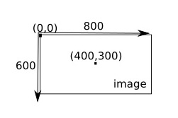

Nous allons utiliser le langage de programmation Python afin de directement travailler sur les pixels d'une image. Par travailler sur les pixels, j'entends déterminer la valeur du canal rouge, la valeur du canal et la valeur du canal bleu pour un pixel donné ou bien encore modifier carrément la couleur d'un pixel. Avant de commencer à écrire un programme qui nous permettra de travailler sur les pixels d'une image, il est nécessaire de préciser que chaque pixel a des coordonnées x,y.s

.Comme vous pouvez le constater sur le schéma ci-dessus, le pixel de coordonnées (0,0) se trouve en haut à gauche de l'image. Si l'image fait 800 pixels de large et 600 pixels de haut, le pixel ayant pour coordonnées (400,300) sera au milieu de l'image.
Lien externeSource : Wikipédia